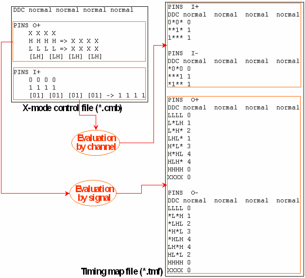

Evaluation by Signal (the Mapping Operator "=>")
Suppose you want to mask the state character sequences HHHHHH and LLLLLL with XXXXXX in your output data. All other possible H,L combinations are to be evaluated. You cannot achieve this with the following definition:
DDC normalnormalnormalnormalnormalnormal PINS O+ XXXXXX HHHHHH->XXXXXX LLLLLL->XXXXXX [HL][HL][HL][HL][HL][HL]
For the combinations HHH and LLL will be mapped to XXX for both channels by the second and third entry (the fourth entry is ignored for these combinations), and this entails that, for example, the sequence HLHLHL will also be masked.
To account for such a situation, the ASCII interface provides another mapping operator
=>, which causes the timing translation to consider the control file entries
for differential pins as a whole and not split up by channels. This is called evaluation by
signal. In the example, it has the effect that the fourth entry is only ignored
for HHHHHH and LLLLLL, but not for
HLHLHL. Thus, the following definition will produce the intended
result:
DDC normal normal normal normal normal normal
PINS O+
X X X X X X
H H H H H H => X X X X X X
L L L L L L => X X X X X X
[HL] [HL] [HL] [HL] [HL] [HL]
When using the => operator observe the following points:
- If
=>is used for single-ended pins it is equivalent to->. - Considering the entries as a whole consumes much more resources than splitting them up by channel.
- It is not always possible to achieve the intended result by simply using
=>instead of=-. You must also take into consideration that with evaluation by channel, two control file entries that differ at their odd positions and at their even positions provide a translation for four different state character sequences. In contrast, the same two entries cover only two such sequences if they are evaluated by signal.As an example, consider the following x-4 mode example:
DDC normal normal normal normal PINS O+ X X X X H H H H -> X X X X H H L L L L H H L L L LIn this definition, every possible H,L pair occurs at the odd positions of at least one entry and also at the even positions of at least one entry. Therefore, the timing map file will contain entries for every such pair with state wildcards at the complementary positions for both channels (compare the timing map file section in Evaluation by Channel), which allows to translate every H,L sequence of length 4 in the ASCII vector file.
However, if you replace the
->by=>, this will no longer be true. For then the entries will be considered as a whole, and no translation will be provided, for example, for the sequence HLLH, so that the vector translation will fail if this sequence occurs in the ASCII vector file.
Example
The following figure shows the difference between timing map file entries resulting from x-mode control file blocks evaluated by signal and those resulting from blocks evaluated by channel:

Observe the following points in the figure:
- The timing map file entries resulting from evaluation by channel are characterized by the fact that the state character sequences of the positive pin always contain the wild card character at the even positions, while the sequences for the negative pin always contain it at the odd positions. Of course, it can also occur at the odd positions for the positive pins, and at the even positions for the negative pin.